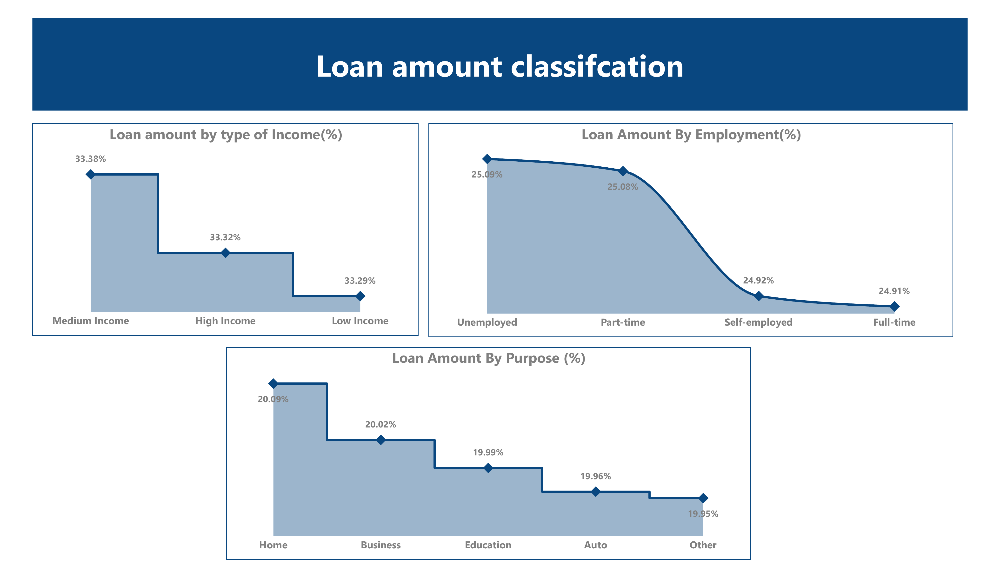
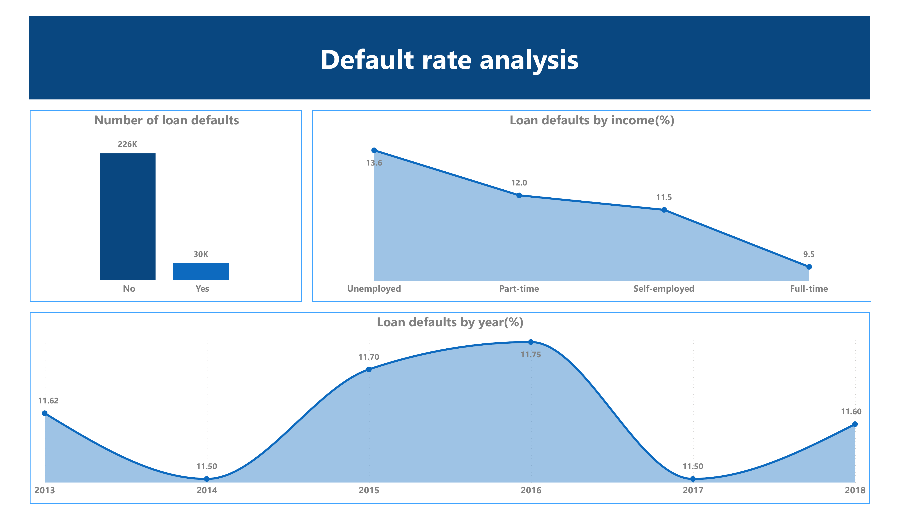
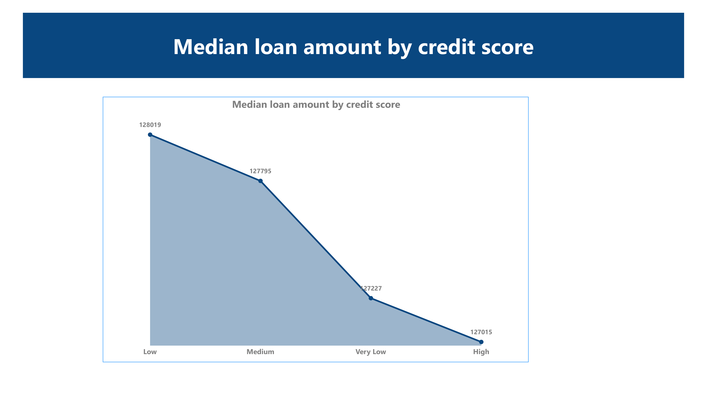

← Back to Portfolio
Project 1: Loan Records Data Analysis
Skills: Python (Pandas, Matplotlib), SQL, Power BI, Data Cleaning, EDA
Overview
Analyzed 255,347 synthetic loan records to uncover borrower trends, credit score patterns,
and default risk insights. Used Python for data preparation and feature engineering,
and Power BI for interactive dashboards.
Process
- Data Preparation: Cleaned dataset, formatted fields, removed duplicates
- Feature Engineering: Added
IncomeCategory, ScoreCategory, LoanYear
- EDA in Python: Loan distribution, credit score analysis, loan trends over time
- Power BI Dashboard: Loan classification, default rate analysis, borrower segmentation
Key Visuals



Insights
- Unemployed and medium-income earners received the largest loan share.
- Business loans to self-employed borrowers showed strong repayment performance.
- Default rates peaked in 2016 at 11.75%.
- Full-time employees had the lowest default rate (9.46%).